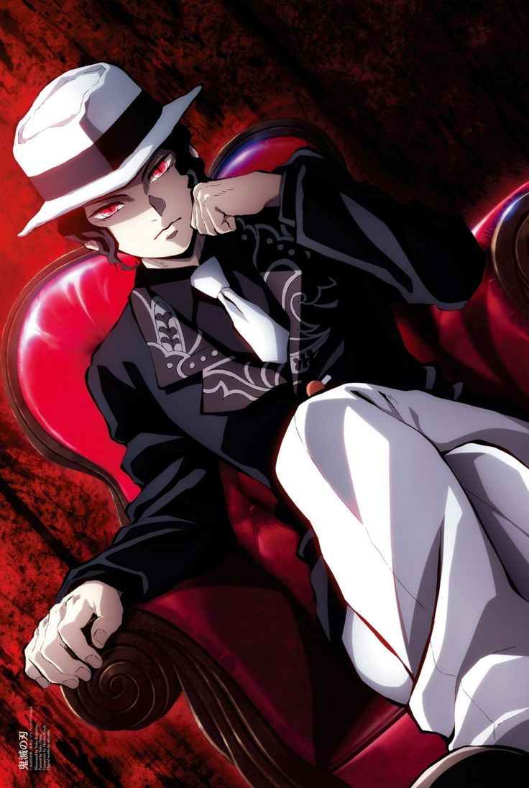
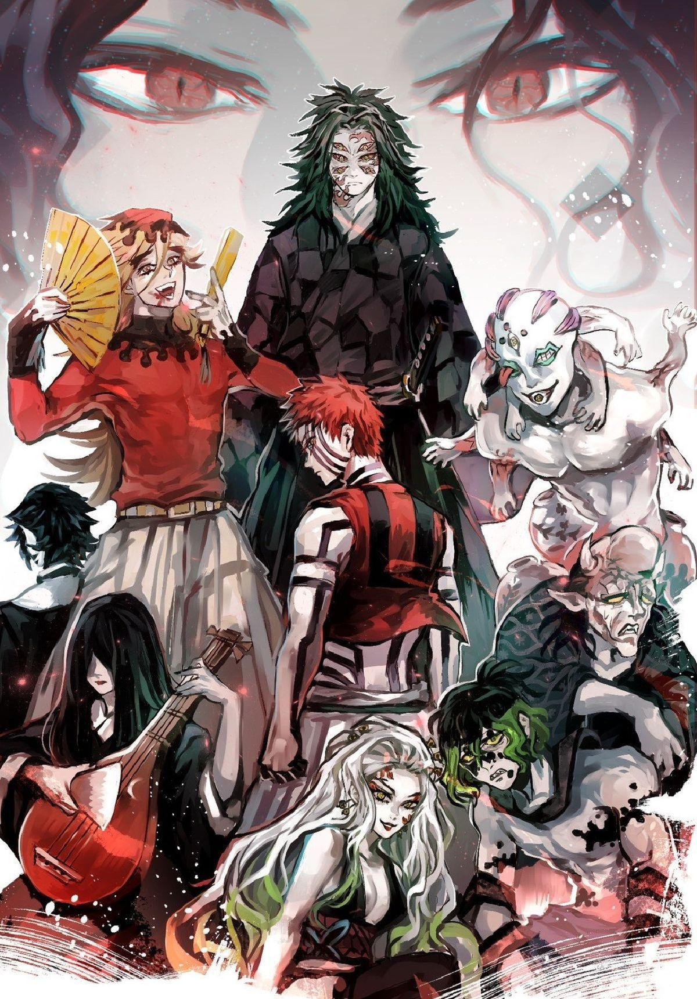

Muzan es el antagonista principal y el primer demonio existente. Hace más de mil años, era un hombre enfermo que se transformó en demonio tras un tratamiento médico experimental. Su Objetivo: Su única meta es encontrar la Lirio de Araña Azul, una flor mística que cree que le otorgará la inmortalidad perfecta y le permitirá caminar bajo el sol, su única debilidad. Habilidades: Tiene control total sobre todos los demonios (puede leer sus pensamientos y destruirlos a distancia). Su cuerpo puede cambiar de forma a voluntad y posee múltiples corazones y cerebros, lo que lo hace casi imposible de matar.

Las Doce Lunas son el grupo de élite de Muzan, los demonios más poderosos que han recibido una gran cantidad de su sangre para aumentar su fuerza. Se dividen en dos grupos de seis:
1. Las Lunas Superiores (Jōgen)
Son los demonios más peligrosos y han mantenido sus rangos durante cientos de años. Han asesinado a innumerables Pilares a lo largo de la historia. 2. Las Lunas Inferiores (Kagen)
Son demonios fuertes, pero mucho más débiles que las Superiores. Muzan los considera reemplazables y vive decepcionado de ellos porque suelen ser derrotados por los Pilares o incluso por cazadores de menor rango.